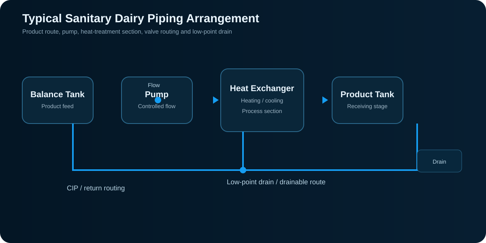
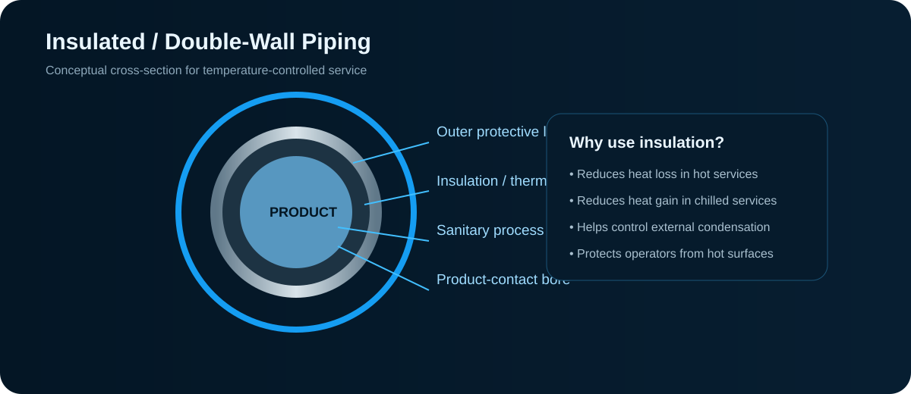
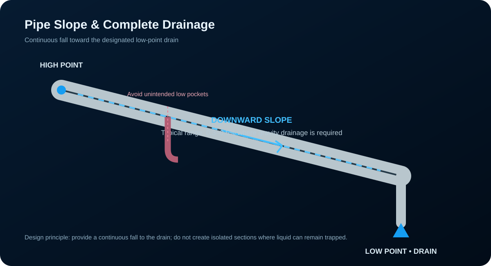
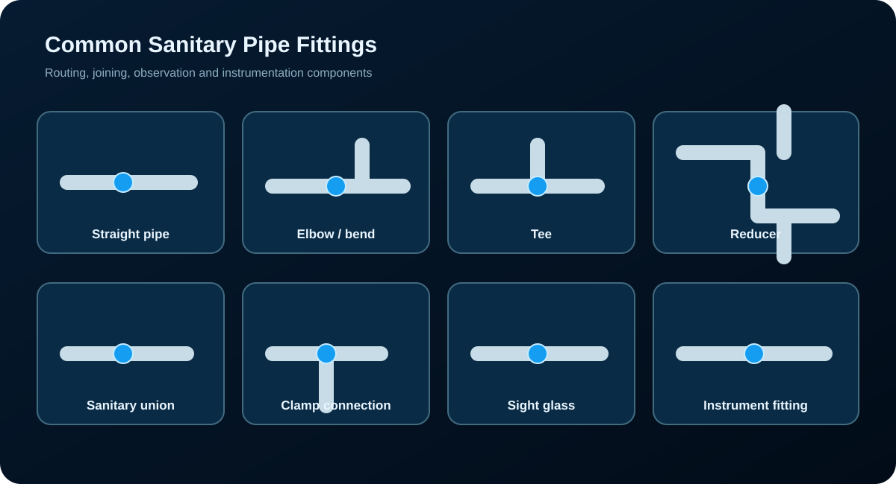
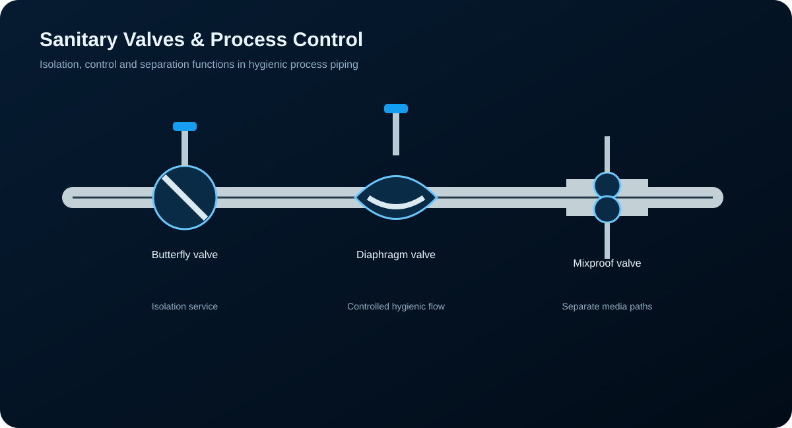

Pipes & Fittings
A structured guide to hygienic dairy process piping: pipe materials and finishes, sanitary connections, fittings, valves, gaskets, sizing, flow velocity, pressure loss, slope and drainage, supports, instrumentation, CIP routing and piping documentation.
What Is Dairy Process Piping?
Dairy process piping is the network that moves milk, cream, cultured products, water and cleaning solutions between reception, storage, separation, standardization, homogenization, heat treatment, fermentation, filling and other process operations. The piping is part of the process system itself: its diameter, route, valves, joints, slope and surface finish influence flow, cleaning, product losses and hygienic performance.

Transport milk and milk products between process equipment while limiting contamination, air incorporation and product hold-up.
Carry cleaning and sanitising solutions through defined circuits at the required flow, temperature, concentration and contact time.
Serve water, steam, condensate, compressed air, chilled water and other plant services. These require their own material, pressure and safety considerations.
Stainless Steel for Hygienic Service
Stainless steel is the principal material for sanitary product-contact piping because it combines corrosion resistance, mechanical strength, cleanability and compatibility with hygienic fabrication. AISI 304/304L is widely used for general dairy service; AISI 316/316L is selected where increased corrosion resistance is desirable, particularly under more demanding chemical or chloride conditions.
Common sanitary grade for milk lines, fittings, tanks and general process construction.
General dairy serviceCorrosion resistantHigher corrosion resistance than 304, useful for demanding cleaning environments and selected process applications.
Higher resistanceHygienic fabricationA smooth internal surface reduces soil retention and supports effective cleaning. A commonly specified hygienic finish is around Ra ≤ 0.8 µm, with electropolishing used for selected applications.
Smooth boreCleanabilitySanitary Tubing and Double-Wall Systems
Sanitary tubing may be supplied as seamless or welded tube manufactured for hygienic process service. The selected tube must match the process pressure, temperature, mechanical loading, cleaning conditions and required surface finish.
Insulated / double-walled piping
Double-wall or insulated arrangements are used where temperature control is important. Insulation reduces heat loss in hot services and heat gain in chilled services. It can also reduce external condensation on cold lines when the insulation system is properly designed and sealed.
Jacketed services
Jacketed piping or equipment provides a controlled heating or cooling medium around the process boundary. The exact arrangement depends on whether the service is steam, hot water, chilled water or another approved utility.

Designing a Pipe That Can Be Cleaned
Hygienic piping should be designed as a complete system rather than as a collection of individual pipes. The objective is to prevent soil accumulation, permit effective CIP, minimise product retention and allow inspection and maintenance.
Use suitable stainless steel and properly finished welds and joints.
Where gravity drainage is required, route the line with a continuous fall toward a designated drain point.
Avoid unnecessary blind branches and stagnant pockets. Instrument connections should be hygienically designed.
Select valve geometry and seat arrangements appropriate for product and CIP service.
Use hygienic welds or sanitary detachable connections with properly seated gaskets.
Valves, sample points, instruments and dismantling points should be reachable for operation and maintenance.
How Is Pipe Size Selected?
Pipe diameter is selected from the required flow rate and acceptable operating conditions. A practical design checks velocity, pressure drop, pump capability, product characteristics, CIP requirements, available tube sizes, installation cost and the consequences of oversizing or undersizing.
Continuity equation
Here Q is volumetric flow rate, A is internal cross-sectional area, v is average velocity and D is internal pipe diameter.
| Flow example | Approx. internal diameter | Approx. velocity | Use |
|---|---|---|---|
| 20,000 L/h | 76 mm | ≈ 1.23 m/s | Illustrates a lower-velocity larger line |
| 20,000 L/h | 51 mm | ≈ 2.72 m/s | Illustrates the velocity increase caused by a smaller bore |
These examples are for understanding the diameter–velocity relationship. The final selected size must be checked against the actual tube ID, product, pressure loss, pump and process/CIP requirements.
Nominal size is not automatically the flow diameter
Sanitary tube is commonly specified using an outside diameter or nominal designation. Hydraulic calculations require the actual internal diameter. Wall thickness and the selected tube standard therefore matter.
Velocity and pressure loss
Increasing velocity generally increases frictional pressure loss. Excessive velocity may also increase shear, air entrainment or product disturbance in sensitive products. A very large pipe reduces velocity but increases capital cost and can make the line less efficient to clean if CIP flow is not properly considered.
Pipe Slope: Where It Matters and Why
A pipe is sloped when its route is intentionally arranged so liquid can move by gravity toward a drain. The key concept is continuous fall. A line can look generally sloped but still retain liquid if it contains an unintended low pocket between two higher points.

Maintain a consistent downward route toward the selected low-point drain where gravity drainage is required.
Place the drain at the true low point so residual product or cleaning liquid has a defined exit path.
A short rise followed by a fall can create a trapped pocket that prevents complete drainage.
Does every milk pipe need a slope?
No. Slope is not a blanket requirement for every pipe in a dairy plant. It is especially important for lines that must be gravity-drainable. Other lines may have process-specific routing, hydraulic, holding-time, equipment or structural requirements. The correct question is: Does this particular line need complete gravity drainage, and where is its intended drain point?
Elbows, Tees, Reducers and Routing Fittings
Fittings change direction, create branches, change diameter or provide access to process equipment. In hygienic service, internal geometry and cleanability are as important as the external connection.

Used for direction changes. Smooth-radius elbows help reduce abrupt changes in flow direction and facilitate cleaning.
Used for branching and distribution. Branches should be arranged to avoid unnecessary stagnant volumes.
Provides a symmetrical diameter transition and is commonly convenient in vertical arrangements where drainage and air-pocket behaviour permit.
Useful in horizontal lines where the orientation can be selected to control liquid drainage or air accumulation. The flat side is oriented according to the service requirement, not by a universal rule.
Provide multiple flow directions where the process layout requires them. Hygienic design should still avoid unnecessary dead zones.
A manual or automated matrix of hygienic connections can route product between different processing circuits. The selected arrangement must make the intended flow path clear and cleanable.
Tri-Clamp, SMS, DIN, RJT and IDF Arrangements
Sanitary connections are selected according to the plant's piping standard, equipment interfaces, operating conditions and maintenance philosophy. The connection must provide a reliable seal while remaining suitable for cleaning and inspection.
| Connection | Main idea | Typical advantage |
|---|---|---|
| Tri-Clamp / clamp ferrule | Ferrules are brought together and sealed with a hygienic gasket and clamp. | Fast dismantling and convenient maintenance/CIP circuit changes. |
| SMS union | Sanitary threaded union using a nut, liner/male component and gasket. | Common hygienic union arrangement in dairy service. |
| DIN 11851 | Threaded hygienic union system with a sanitary sealing arrangement. | Robust detachable connection for hygienic process piping. |
| RJT | Ring-joint type sanitary union. | Heavy-duty detachable connection used in some dairy installations. |
| IDF | International Dairy Federation hygienic connection concept. | Designed around hygienic dairy service and cleanability. |
Valves That Control the Process

Compact quarter-turn isolation valve widely used on hygienic lines. It is suitable for many on/off duties but is not automatically the best choice for fine flow control.
Automated valve used for hygienic routing, isolation and controlled process sequences.
Allows two compatible process circuits to be controlled with separation between media, reducing the risk of cross-contamination during complex routing.
In a pasteurizer, the diversion system sends milk away from the forward-flow path when the required pasteurization condition is not satisfied.
Permits flow mainly in one direction and helps prevent reverse flow that could disturb process or CIP circuits.
Protects equipment or piping from dangerous overpressure when correctly selected, installed and maintained.
Provides a hygienic point for collecting representative samples. Special arrangements may be used where flame sterilization or aseptic sampling is required.
Choosing the Correct Gasket
The gasket is a process-contact component, not merely a mechanical accessory. Its temperature range, chemical compatibility, compression, mechanical properties and product-contact suitability must match the service.
Common hygienic elastomer for hot water, many cleaning solutions and general dairy service. Compatibility must be checked for the actual chemical and temperature conditions.
High chemical and temperature resistance. Often selected where elastomer compatibility or higher temperature capability is required.
Useful for selected high-temperature and oil/fat-related services, subject to the specific formulation and process conditions.
Flexible food-contact elastomer used in selected hygienic applications. Temperature and chemical compatibility must still be verified.
Keeping the Designed Route in Place
Pipe supports maintain elevation, slope and alignment while limiting vibration and movement. Supports must also account for thermal expansion, equipment nozzle loads and the weight of the pipe when filled.
- Support long straight runs at suitable intervals according to tube size, material and loading.
- Provide support near valves, fittings and other concentrated loads.
- Maintain the intended slope after the line is fully installed and loaded.
- Allow for thermal expansion and contraction in hot and cold services.
- Avoid transferring excessive loads to pumps, heat exchangers or tank nozzles.
- Use hygienic support arrangements that do not create unnecessary soil or water traps.
Pressure, Temperature, Flow and Sampling Points
Instruments should be located where they measure a representative process condition and where the connection can be cleaned, inspected and maintained.
Monitors line pressure and can help identify pump, restriction, valve or process abnormalities.
Measures product or utility temperature. In thermal processes, its location and response time can be critical.
Measures flow through the process line. The selected technology must suit the fluid, conductivity, accuracy and cleaning conditions.
Provides a switching signal at a defined pressure and can be used for equipment protection or control logic.
Should provide a representative sample while maintaining hygienic integrity and safe operator access.
Confirms the commanded position of automated valves and supports sequence control and fault detection.
Designing Lines for Cleaning-in-Place
CIP is not simply a matter of sending cleaning liquid through any available pipe. The circuit must be arranged so the required cleaning solution reaches all relevant product-contact surfaces with adequate flow, temperature, chemical concentration and contact time.
The line must provide the hydraulic conditions required to clean the internal surface and fittings.
Cleaning temperature is selected according to the soil, chemical and equipment limitations.
Detergent or sanitiser concentration must remain within the validated operating range.
The cleaning cycle must provide sufficient exposure for the selected chemistry and process soil.
After the cycle, residual cleaning solution should not remain trapped in sections intended to drain.
Valve matrices and routing logic must prevent unintended mixing of product, cleaning chemicals and utilities.
P&ID, Isometrics and Line Identification
A P&ID communicates the functional relationship between equipment, piping, valves and instruments. A piping isometric shows physical routing, dimensions, fittings, elevations and connection information. Together they allow the process concept and the physical installation to be understood.
P&ID should make clear
- Equipment connections and process direction
- Major valves and control valves
- Instruments and measurement points
- Product, CIP and utility routing
- Important flow/diversion paths
Isometric should make clear
- Pipe route and elevation
- Fittings and joint locations
- Supports and drains
- Connection points
- Dimensions needed for fabrication/installation
Before Accepting a Dairy Product Line
Correct stainless grade, finish and compatibility with product and cleaning conditions.
Diameter, velocity, pressure loss and pump capability are suitable.
Minimal dead legs, smooth joints, cleanable valves and accessible components.
Drainable portions have continuous fall and no unintended low pockets.
Correct ferrules, unions, clamps and gaskets are installed and aligned.
Valves, instruments, sample points and dismantling locations are accessible.
This page is intended as a structured learning guide for dairy process piping. Actual plant design must follow the applicable engineering specification, equipment manufacturer's requirements and validated hygienic/process design criteria.